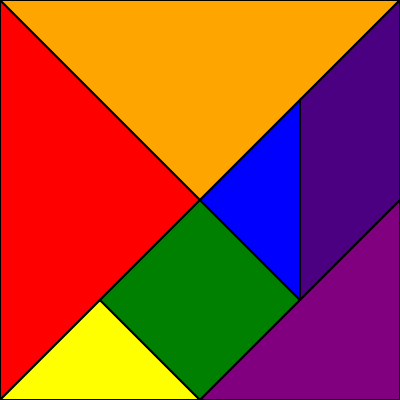

1、保存canvas中绘制的内容为图片
HTML代码：
<canvas id="canvas" width="400" height="400"></canvas>
<div>
<button id="save">保存</button>
</div>js代码：
var arr = [
{locations:[[0,0],[200,200],[0,400]],color:"red"},
{locations:[[0,0],[400,0],[200,200]],color:"orange"},
{locations:[[0,400],[100,300],[200,400]],color:"yellow"},
{locations:[[100,300],[200,200],[300,300],[200,400]],color:"green"},
{locations:[[300,100],[200,200],[300,300]],color:"blue"},
{locations:[[300,100],[400,0],[400,200],[300,300]],color:"indigo"},
{locations:[[200,400],[400,400],[400,200]],color:"purple"}
];
var oCanvas = document.getElementById("canvas");
var ctx = oCanvas.getContext("2d");
for(let i=0;i<arr.length;i++){
draw(arr[i],ctx);
}
function draw(item,ctx){
ctx.beginPath();
ctx.moveTo(item.locations[0][0],item.locations[0][1]);
for(let i = 0;i<item.locations.length;i++){
let x = item.locations[i][0];
let y = item.locations[i][1];
ctx.lineTo(x,y);
console.log(1234567)
}
ctx.closePath();
ctx.fillStyle = item.color;
ctx.fill();
ctx.strokeStyle = "#000";
ctx.lineWidth = 2;
ctx.stroke();
}
var imgId = document.getElementById("imgId");
document.getElementById("save").onclick = function (){
downLoad(saveAsPNG(canvas));
}
// 保存成png格式的图片
function saveAsPNG(canvas) {
return canvas.toDataURL("image/png");
}
// 保存成jpg格式的图片
function saveAsJPG(canvas) {
return canvas.toDataURL("image/jpeg");
}
// 保存成bmp格式的图片 目前浏览器支持性不好
function saveAsBMP(canvas) {
return canvas.toDataURL("image/bmp");
}
/**
* @author web得胜
* @param {String} url 需要下载的文件地址
* */
function downLoad(url){
var oA = document.createElement("a");
oA.download = '';// 设置下载的文件名，默认是'下载'
oA.href = url;
document.body.appendChild(oA);
oA.click();
oA.remove(); // 下载之后把创建的元素删除
}效果图--文中图片是个七巧板，如下:

原文：https://www.cnblogs.com/zhaodesheng/p/9848496.html
2、JavaScript实现根据div截图并下载
引入相关js(这个js引入很重要，本人就是引入别的js，发现没有效果，以为此方法不对)：
<script type="text/javascript" src="https://cdn.bootcss.com/html2canvas/0.5.0-beta4/html2canvas.js"></script>
<script type="text/javascript" src="https://cdn.bootcss.com/jquery/3.3.1/jquery.js"></script>css代码：
<style type="text/css">
body{background: #ccc}
#dw{position: absolute;top: 10px;left:10%;height: 620px;width:1030px;background: #fff; border:1px solid black;padding: 10px}
.close{
position:relative;
left: 10px;
width:0.2em;
height:1em;
background: #333;
-webkit-transform: rotate(45deg);
-moz-transform: rotate(45deg);
-o-transform: rotate(45deg);
-ms-transform: rotate(45deg);
transform: rotate(45deg);
display: inline-block;
}
.close:after{
content: "";
position: absolute;
top: 0;
left: 0;
width:0.2em;
height:1em;
background: #333;
-webkit-transform: rotate(270deg);
-moz-transform: rotate(270deg);
-o-transform: rotate(270deg);
-ms-transform: rotate(270deg);
transform: rotate(270deg);
}
</style>HTML代码：
<!-- 触发事件按钮 -->
<div style="height: 30px;width: 168px;border:2px solid black;background: red;text-align: center;" onclick="doScreenShot()">截图</div>
<!-- 生成图片展示的DIV dw-->
<div id="dw" >
<div style="float: right;width: 25px;height: 25px;" title="关闭" onclick="closeok()">
<span class="close"></span>
</div>
</div>
<div id="main" >
<img alt="" src="baidu.jpg">
</div>js代码：
<script type="text/javascript">
$("#dw").hide();
//关闭图片
function closeok(){
$("#dw").hide();
}
//点击截图
function doScreenShot(){
$("#dw").show();
html2canvas($("#main"), {
onrendered: function(canvas) {
canvas.id = "mycanvas";
var mainwh=$("#main").width();
var mainhg=$("#main").height();
var img = convertCanvasToImage(canvas);
console.log(img);
//document.body.appendChild(img);
$("#dw").append(img) //添加到展示图片div区域
img.onload = function() {
img.onload = null;
canvas = convertImageToCanvas(img, 0, 0, 1024, 600); //设置图片大小和位置
img.src = convertCanvasToImage(canvas).src;
$(img).css({
background:"#fff"
});
//调用下载方法
if(browserIsIe()){ //假如是ie浏览器
DownLoadReportIMG(img.src);
}else{
download(img.src)
}
}
}
});
}
//绘制显示图片
function convertCanvasToImage(canvas) {
var image = new Image();
image.src = canvas.toDataURL("image/png"); //获得图片地址
return image;
}
//生成canvas元素，相当于做了一个装相片的框架
function convertImageToCanvas(image, startX, startY, width, height) {
var canvas = document.createElement("canvas");
canvas.width = width;
canvas.height = height;
canvas.getContext("2d").drawImage(image, startX, startY, width, height, 20, 20, 960, 600); //在这调整图片中内容的显示（大小,放大缩小,位置等）
return canvas;
}
function DownLoadReportIMG(imgPathURL) {
//如果隐藏IFRAME不存在，则添加
if (!document.getElementById("IframeReportImg"))
$('<iframe style="display:none;" id="IframeReportImg" name="IframeReportImg" "DoSaveAsIMG();" width="0" height="0" src="about:blank"></iframe>').appendTo("body");
if (document.all.IframeReportImg.src != imgPathURL) {
//加载图片
document.all.IframeReportImg.src = imgPathURL;
}
else {
//图片直接另存为
DoSaveAsIMG();
}
}
function DoSaveAsIMG() {
if (document.all.IframeReportImg.src != "about:blank")
window.frames["IframeReportImg"].document.execCommand("SaveAs");
}
// 另存为图片
function download(src) {
var $a = $("<a></a>").attr("href", src).attr("download", "img.png");
$a[0].click();
}
//判断是否为ie浏览器
function browserIsIe() {
if (!!window.ActiveXObject || "ActiveXObject" in window)
return true;
else
return false;
}
</script>原文：https://blog.csdn.net/u014131617/article/details/86673252